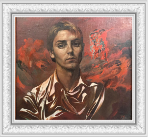
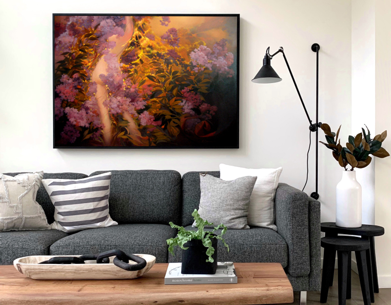
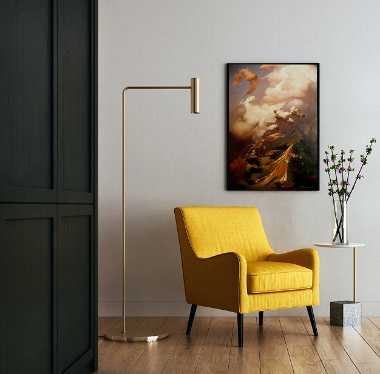
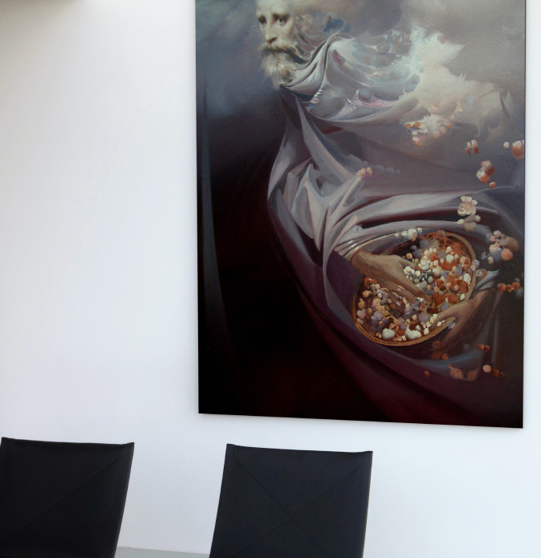
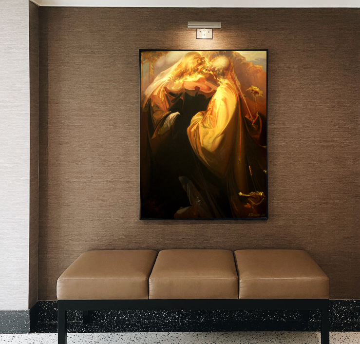

Автобіографія
2008 р„ Виставка живопису”, галерея „Зелена канапа”
2005 р., Президентський палац. Братислава (Словаччина) – учасник
2005 р., La Tavolozza. Італія (спеціальна премія) – учасник
2002 р., Народний дім. Ужгород (Україна) – персональна виставка
2002 р., “Морська галерея”. Одеса (Україна) – персональна виставка
2002 р., “Arias & Vanda Gallery”. Братислава (Словаччина) – персональна виставка
2001 р., Президентський палац. Братислава (Словаччина) – персональна виставка
2000 р., “Морська галерея”. Одеса (Україна) – персональна виставка
2000 р., Муніципальна галерея. Пряшів (Словаччина) – персональна виставка
2000 р., Технічний музей. Кошіце (Словаччина) – персональна виставка
2000 р., “ART-Novum”. Варшава (Польща) – персональна виставка
1999 р., Арт-форум. Гент (Бельгія) – учасник
1999 р., “IRIS – 4”. Валенсія (Іспанія) – учасник
1999 р., “Белая луна”. Одеса (Україна) – персональна виставка
1998 р., “Морська галерея”. Одеса (Україна) – персональна виставка
1996 р., “Сакральне мистецтво Галичини ХХ ст.”. Національний музей, Львів (Україна) – учасник
1996 р., Національний музей. Львів (Україна) – персональна виставка
Медаль від словацького президента Рудольфа Шустера
Братислава, 2001
Спеціальна премія за новизну в сучасному малярстві
Італія, 2005
Орден Святого Миколая Чудотворця за заслуги у відродженні духовності
Україна, 2010
Картини автора в інтер’єрі

“Бузкове”
100x80

“Садівник”
90x70

“Сіяч”
90x70

“Спасибі Маестро”
90x70
З приводу співпраці та будь яких запитань, зв’яжіться зі мною:
+38(097)93 729 19
bohdanpanchyshyn.art@gmail.com
м. Миколаїв, Львів. обл